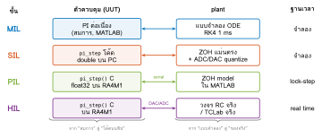
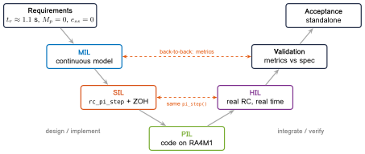
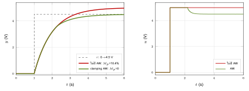
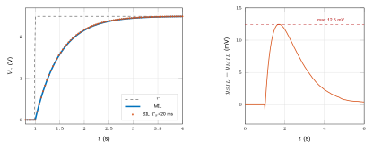
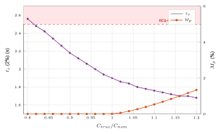
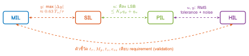
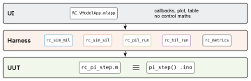

01068007 ระบบควบคุม: การวิเคราะห์และการออกแบบเชิงแบบจำลอง
บทที่ 13 การออกแบบระบบควบคุมโดยอ้างอิงโมเดลทางคณิตศาสตร์ Model-Based Design: MIL · SIL · PIL · HIL
requirements · traceability · ZOH · quantization · float32 · back-to-back test · real time · jitter · HIL
รศ.ดร.อาจินต์ น่วมสำราญ
ภาควิชาวิศวกรรมการวัดและควบคุม คณะวิศวกรรมศาสตร์ สถาบันเทคโนโลยีพระจอมเกล้าเจ้าคุณทหารลาดกระบัง
ทำไมต้องมีบทนี้ ภาพรวม
บทที่ 8–12 ให้
ตัวควบคุมบนกระดาษ : $C(s)$, $K_p$, $T_i$, anti-windup, 2-DOF
แต่ระบบจริงต้องการ
โค้ดบนชิป ที่:
ทำงานที่ $T_s$ คงที่ ผ่าน ADC/DAC ที่มีความละเอียดจำกัด
คำนวณด้วย float32 ไม่ใช่ double
ต้องพิสูจน์ได้ว่าตรงกับที่ออกแบบ ก่อนต่อกับ plant จริง
คำถามหลักของบท:
เราจะเชื่อโค้ดที่ลงบอร์ดได้อย่างไร?
คำตอบ: Model-Based Design + V-Model
แบบจำลองเป็น executable specification
ทดสอบตัวควบคุมตัวเดียวกัน ใน 4 สภาพแวดล้อม: MIL → SIL → PIL → HIL
เปลี่ยนทีละอย่าง แล้ววัดผลต่างด้วย back-to-back test
ทุกการทดสอบย้อนกลับไปหา requirement ได้
01068007 Control Systems · Chapter 13 · รศ.ดร.อาจินต์ น่วมสำราญ · PDF · m-files 2 / 56
ผลลัพธ์การเรียนรู้ (LO13.1–13.10) ภาพรวม
LO13.1 อธิบาย MBD, V-Model, verification vs validation U
LO13.2 เขียน requirement ที่วัดได้ และ traceability matrix Ap
LO13.3 เลือกระดับความละเอียดของแบบจำลอง plant An
LO13.4 ออกแบบ test case ของ MIL (nominal + boundary) Ap
LO13.5 วิเคราะห์ผลของ $T_s$, ZOH และ quantization ใน SIL An
LO13.6 พิสูจน์ numerical equivalence ของ PIL An
LO13.7 คำนวณเกณฑ์ผ่านของ back-to-back test Ap
LO13.8 เขียน real-time loop แบบ drift-free, ประเมิน jitter Ap
LO13.9 ใช้ HIL ตรวจ tolerance ของอุปกรณ์ E
LO13.10 เชื่อมโยงกับมาตรฐาน IEC 61508 / ISO 26262 U
เชื่อมกับ CLO ของรายวิชา
ต่อยอดตัวควบคุมจากบทที่ 12 (PI + anti-windup) ไปสู่ระบบฝังตัวจริงบน Arduino UNO R4 WiFi ด้วยชุดแล็บ RC_VModel_R4 และ TCLab — ใช้เป็นฐานของ mini-project MBD V-Model
01068007 Control Systems · Chapter 13 · รศ.ดร.อาจินต์ น่วมสำราญ · PDF · m-files 3 / 56
กรณีศึกษาตลอดบท: วงจร RC บน Arduino UNO R4 WiFi ภาพรวม
$$
G(s)=\frac{V_c(s)}{U(s)}=\frac{1}{\tau s+1},\quad \tau=RC=1\ \text{s}
$$
A0 = DAC 12-bit จริง ($q_{DAC}=1.221$ mV)
A1 = ADC 14-bit ($q_{ADC}=0.305$ mV)
RA4M1 Cortex-M4F 48 MHz มี FPU float32
PI: $T_i=\tau$, $\tau_{cl}=0.5$ s $\Rightarrow K_p=2$, $K_i=2$
$T_s=20$ ms, setpoint 0 → 2.5 V ที่ $t=1$ s
plant ตัวที่ 2:
TCLab (heater + TMP36) ใช้ firmware และ UUT
ตัวเดียวกัน
01068007 Control Systems · Chapter 13 · รศ.ดร.อาจินต์ น่วมสำราญ · PDF · m-files 4 / 56
แผนที่ของบท ภาพรวม

13.1–13.3 MBD, requirement, แบบจำลอง plant
13.4–13.7 MIL, SIL, PIL, HIL ทีละขั้น
13.8–13.11 back-to-back, real time, สถาปัตยกรรม, มาตรฐาน
01068007 Control Systems · Chapter 13 · รศ.ดร.อาจินต์ น่วมสำราญ · PDF · m-files 5 / 56
13.1.1 Code-first เทียบกับ Model-Based Design 13.1 MBD
Code-first (เขียนโค้ดแล้วลองกับของจริง)
พบปัญหาครั้งแรกบน hardware ซึ่งแพงและอันตราย
แยกไม่ออกว่าผิดที่ทฤษฎี โค้ด ตัวเลข หรือฮาร์ดแวร์
ทดสอบซ้ำยาก (plant จริงเปลี่ยนตามอุณหภูมิ/เวลา)
ไม่มีหลักฐานว่าโค้ดทำตาม requirement
Model-Based Design
front-loading : หาข้อผิดพลาดตั้งแต่ขั้นแบบจำลอง
เปลี่ยนทีละปัจจัย → รู้ว่าผลต่างมาจากไหน
แบบจำลองรันซ้ำได้ไม่จำกัด ไม่มีความเสี่ยง
ทุกขั้นมีหลักฐานการทวนสอบ (log, metrics)
หลักการ
“ทดสอบสิ่งเดียวกัน ในสภาพแวดล้อมที่สมจริงขึ้นทีละขั้น” — ผลต่างระหว่างขั้นที่ติดกันต้องอธิบายได้ ด้วยปัจจัยที่เปลี่ยนเพียงตัวเดียว
01068007 Control Systems · Chapter 13 · รศ.ดร.อาจินต์ น่วมสำราญ · PDF · m-files 6 / 56
13.1.2 V-Model ของงานควบคุม 13.1 MBD

ฝั่งซ้าย (ลงล่าง) : requirement → ออกแบบ → แบบจำลอง → โค้ด → โค้ดบน processor
ฝั่งขวา (ขึ้นบน) : integrate และทวนสอบเทียบกับระดับเดียวกันฝั่งซ้าย ; เส้นประ = back-to-back test
01068007 Control Systems · Chapter 13 · รศ.ดร.อาจินต์ น่วมสำราญ · PDF · m-files 7 / 56
13.1.3 Verification กับ Validation 13.1 MBD
Verification — “build the thing right”
ผลของขั้นนี้ตรงกับข้อกำหนดของขั้นก่อนหน้า หรือไม่
Validation — “build the right thing”
ระบบที่ได้ตอบโจทย์ผู้ใช้ หรือไม่ ขั้น เปลี่ยนจากขั้นก่อน สิ่งที่พิสูจน์ MIL — (สมการต่อเนื่อง) แนวคิดการออกแบบตรง requirement SIL ต่อเนื่อง → $T_s$, ZOH, quantize ผลของ sampling และ converter PIL double บน PC → float32 บน MCU compiler, FPU, เวลา execute HIL plant model → plant จริง, real time I/O, tolerance, noise, timing จริง
01068007 Control Systems · Chapter 13 · รศ.ดร.อาจินต์ น่วมสำราญ · PDF · m-files 8 / 56
13.1.4 Single source of truth: Unit Under Test (UUT) 13.1 MBD
MATLAB —
ch13_pi_step.m
function [u, I] = ch13_pi_step(r, y, I, P)
e = r - y;
v = P.Kp*e + I;
u = min(max(v,P.Umin),P.Umax);
if ~((v > P.Umax && e > 0) || ...
(v < P.Umin && e < 0))
I = I + P.Ki*P.Ts*e;
end
end
C++ —
pi_step() ใน firmware
float pi_step(float r, float y) {
float e = r - y;
float v = Kp * e + I; // unsaturated
float u = constrain(v, Umin, Umax);
if (!((v > Umax && e > 0.0f) ||
(v < Umin && e < 0.0f)))
I += Ki * Ts * e; // clamping AW
return u;
}
ทำไมต้องเหมือนกันบรรทัดต่อบรรทัด
ถ้า UUT ต่างกันแม้เพียงลำดับคำสั่ง (อัปเดต $I$ ก่อนหรือหลังคำนวณ $u$) ผลต่างระหว่างขั้นจะปนกับ “bug” และ back-to-back test จะไม่มีความหมาย ในอุตสาหกรรมใช้ code generation (เช่น Embedded Coder) แทนการเขียนคู่ด้วยมือ
01068007 Control Systems · Chapter 13 · รศ.ดร.อาจินต์ น่วมสำราญ · PDF · m-files 9 / 56
13.2.1 Requirement ที่ดีต้องทดสอบได้ 13.2 Requirement
ไม่ดี (ทดสอบไม่ได้)
“ระบบต้องตอบสนองเร็ว”
“overshoot น้อย”
“ทำงานได้ real time”
“ทนทานต่อการเปลี่ยนแปลงของอุปกรณ์”
ดี (มีตัวเลข เงื่อนไข และวิธีวัด)
$t_r$ (10–90%) $\le1.5$ s สำหรับ step 0→2.5 V
$M_p\le5\%$ วัดจาก $y$ ที่ไม่ quantize
execute $\le10\%$ ของ $T_s$ = 20 ms (วัดด้วย micros())
ผ่าน REQ-01…05 เมื่อ $C\in[0.8,1.2]\,C_{nom}$
ลักษณะของ requirement ที่ดี
เจาะจง (มีปริมาณและหน่วย) · วัดได้ (บอกวิธีวัดและสัญญาณ) · ทำได้จริง (ไม่ขัดกับฟิสิกส์ เช่น $|u|\le5$ V) · มีเหตุผล (โยงกับผู้ใช้) · มีรหัสอ้างอิง (REQ-xx) เพื่อทำ traceability
01068007 Control Systems · Chapter 13 · รศ.ดร.อาจินต์ น่วมสำราญ · PDF · m-files 10 / 56
13.2.2 ชุด requirement ของกรณีศึกษา 13.2 Requirement
รหัส ข้อกำหนด เหตุผล / ที่มา ขั้นที่ทวนสอบ REQ-01 $t_r$ (10–90%) $\le1.5$ s ทฤษฎี $2.2\,\tau_{cl}=1.10$ s + margin MIL SIL HIL REQ-02 $M_p\le5\%$ ไม่ให้ $V_c$ เกินช่วงใช้งาน MIL SIL HIL REQ-03 $t_s$ (2%) $\le2.5$ s ทฤษฎี $3.9\,\tau_{cl}=1.96$ s + margin MIL SIL HIL REQ-04 $|e_{ss}|\le5$ mV (4 LSB DAC) integrator (type 1) SIL HIL REQ-05 $0\le u\le5$ V ช่วงของ DAC MIL SIL PIL HIL REQ-06 $r$: 0→4.5 V ต้องได้ $M_p\le5\%$ actuator อิ่มตัว → ต้องมี AW MIL SIL REQ-07 execute $\le$ 10% ของ $T_s$ เหลือเวลาให้ I/O และ serial PIL REQ-08 ผ่าน REQ-01…05 เมื่อ $C=C_{nom}(1\pm0.2)$ tolerance ของ electrolytic SIL HIL
สังเกต
margin ระหว่างค่าทฤษฎีกับเกณฑ์ (เช่น 1.96 s กับ 2.5 s) คืองบความคลาดเคลื่อน ที่ sampling, quantization และ tolerance ของอุปกรณ์จะใช้ไป — HIL จะบอกว่างบพอหรือไม่
01068007 Control Systems · Chapter 13 · รศ.ดร.อาจินต์ น่วมสำราญ · PDF · m-files 11 / 56
13.2.3 Traceability: requirement ↔ test case ↔ ผลทดสอบ 13.2 Requirement
test case ครอบคลุม MIL SIL PIL HIL TC-01 step 0→2.5 V REQ-01…05 ✓ ✓ ✓ ✓ TC-02 step 0→4.5 V REQ-05, 06 ✓ ✓ TC-03 $T_s$ sweep REQ-01…03 ✓ TC-04 float32 REQ-05 ✓ TC-05 exec time REQ-07 ✓ TC-06 $C$ ±20% REQ-08 ✓ ✓
กฎของ traceability
ทุก requirement มี test case อย่างน้อย 1 ตัว
ทุก test case อ้างถึง requirement (ไม่มี “test ลอย”)
ผลทดสอบเก็บเป็นไฟล์ (CSV/PNG) พร้อม version ของโค้ด
เมื่อ requirement เปลี่ยน รู้ทันทีว่าต้องรัน test ใด
01068007 Control Systems · Chapter 13 · รศ.ดร.อาจินต์ น่วมสำราญ · PDF · m-files 12 / 56
ตัวอย่าง 13.1: ตรวจ REQ อัตโนมัติ (ch13_01_requirements.m) 13.2 Requirement
REQ = { ...
'REQ-01','tr <= 1.5 s', @(M) M.tr <= 1.5
'REQ-02','Mp <= 5
'REQ-03','ts <= 2.5 s', @(M) M.ts <= 2.5
'REQ-04','|ess| <= 5 mV',@(M) abs(M.ess) <= 5e-3
'REQ-05','0 <= u <= 5 V',@(M) M.umin>=0 && M.umax<=5};
R = {ch13_sim_mil(P), ch13_sim_sil(P)};
for i = 1:size(REQ,1)
v = cellfun(@(x) REQ{i,3}(x.M), R);
...
end
requirement เป็น
ข้อมูล (function handle) แยกจากโค้ดทดสอบ → เพิ่ม REQ ใหม่ได้โดยไม่แก้ harness
ผลบน R2026a:
MIL SIL $t_r$ (s) 1.099 1.080 $t_s$ (s) 1.957 1.900 $M_p$ (%) 0.00 0.01 $e_{ss}$ (mV) 0.20 $-0.29$ REQ-01…05 PASS ×5 PASS ×5
ผ่านทั้งหมดที่ nominal แต่ยังไม่ได้ ทดสอบ REQ-08 (tolerance) — จะเห็นใน 13.7
01068007 Control Systems · Chapter 13 · รศ.ดร.อาจินต์ น่วมสำราญ · PDF · m-files 13 / 56
13.3.1 ระดับความละเอียดของแบบจำลอง (model fidelity) 13.3 แบบจำลอง plant
ระดับ ตัวอย่าง ข้อดี ข้อจำกัด First principles RC: $RC\dot v_c+v_c=u$ พารามิเตอร์มีความหมายทางฟิสิกส์ ต้องรู้ค่าอุปกรณ์ (C ±20%) Grey box TCLab energy balance: $mc_p\dot T=UA(T_a-T)+\varepsilon\sigma A(T_a^4-T^4)+\alpha Q$ ไม่เป็นเชิงเส้นครบ, fit ได้ไม่กี่ตัว ต้องมีข้อมูลทดลองและ optimizer Black box FOPDT $\dfrac{Ke^{-\theta s}}{\tau s+1}$ ใช้ออกแบบ PI ด้วย SIMC ได้ทันที ใช้ได้รอบจุดทำงานเท่านั้น
หลักการเลือก
แบบจำลองสำหรับออกแบบ ควรง่ายที่สุดที่ยังจับพลวัตหลักได้ (FOPDT) ส่วนแบบจำลองสำหรับทวนสอบ (MIL/SIL) ควรละเอียดกว่า เพื่อให้ “ตัวควบคุมที่ออกแบบจากแบบจำลองง่าย” ถูกทดสอบกับ plant ที่ใกล้ของจริงกว่า — ช่องว่างระหว่างสองแบบคือ model uncertainty
01068007 Control Systems · Chapter 13 · รศ.ดร.อาจินต์ น่วมสำราญ · PDF · m-files 14 / 56
13.3.2 แบบจำลองและการออกแบบ PI ของกรณีศึกษา 13.3 แบบจำลอง plant
จาก Kirchhoff: $RC\,\dot v_c+v_c=u$
$$
G(s)=\frac{1}{\tau s+1},\qquad C(s)=K_p\frac{T_i s+1}{T_i s}
$$
เลือก $T_i=\tau$ (zero หักล้าง pole):
$$
L(s)=\frac{K_p}{\tau s}=\frac{1}{\tau_{cl}s}\ \Rightarrow\ T(s)=\frac{1}{\tau_{cl}s+1}
$$
$$
K_p=\frac{\tau}{\tau_{cl}}=2,\qquad K_i=\frac{1}{\tau_{cl}}=2\ \text{s}^{-1}
$$
คำทำนายเชิงทฤษฎี (ใช้เป็น oracle)
$t_r=\tau_{cl}\ln9=1.099$ s
$t_s(2\%)=\tau_{cl}\ln50=1.956$ s
$M_p=0$, $e_{ss}=0$ (type 1)
$\omega_c=1/\tau_{cl}=2$ rad/s, PM $=90°$
ข้อสังเกต
ทันทีหลัง step: $u=K_p\cdot2.5=5$ V $=U_{max}$ พอดี — ตัวควบคุมอยู่ที่ขอบ ของ saturation ซึ่งเป็น boundary case ที่ต้องทดสอบ
01068007 Control Systems · Chapter 13 · รศ.ดร.อาจินต์ น่วมสำราญ · PDF · m-files 15 / 56
13.3.3 System identification บน TCLab จริง 13.3 แบบจำลอง plant
default identify $K$ (°C/%) 0.521 0.4415 $\tau$ (s) 107 111.5 $\theta$ (s) 16.8 20.4 $K_p$ (SIMC) 4.388 5.010 $K_i$ 0.0410 0.0449 RMSE 3.37 °C 0.375 °C
บทเรียน
แบบจำลองที่ไม่ได้ identify ทำนายผิดถึง 3.4 °C — MIL ที่ผ่านด้วยแบบจำลองผิดไม่ใช่หลักฐาน
01068007 Control Systems · Chapter 13 · รศ.ดร.อาจินต์ น่วมสำราญ · PDF · m-files 16 / 56
13.4.1 Model-in-the-Loop: ทดสอบ “แนวคิด” ของการออกแบบ 13.4 MIL
ตัวควบคุมและ plant เป็น
สมการต่อเนื่อง ทั้งคู่ state $x=[y;\,I]$:
$$
\dot y=\frac{u-y}{\tau},\qquad \dot I=\begin{cases}0 & \text{อิ่มตัวและ } e \text{ ดันออก}\\ K_i e & \text{อื่น ๆ}\end{cases}
$$
$u=\mathrm{sat}(K_pe+I)$, แก้ด้วย
RK4 fixed-step 1 ms
ไม่มี $T_s$, ไม่มี quantization, ไม่มี float32
ถ้า MIL ไม่ผ่าน → ปัญหาอยู่ที่การออกแบบ
ทำไม fixed-step ไม่ใช่ ode45
กราฟ MIL ใช้เป็นค่าอ้างอิง ของ back-to-back จึงต้อง reproducible บนกริดเวลาที่รู้ล่วงหน้า
saturation และ AW ทำให้ $\dot x$ ไม่ต่อเนื่อง solver แบบ variable-step อาจเลือกขั้นเวลาคร่อมจุดสวิตช์ต่างกันแต่ละรุ่น
ไม่ต้องพึ่ง toolbox
01068007 Control Systems · Chapter 13 · รศ.ดร.อาจินต์ น่วมสำราญ · PDF · m-files 17 / 56
13.4.2 โค้ด MIL (ch13_sim_mil.m) 13.4 MIL
dt = P.dtMIL; t = (0:dt:P.tend).'; x = [0; 0];
for k = 1:N
[~, u(k), r(k)] = f(t(k), x); y(k) = x(1);
k1 = f(t(k), x);
k2 = f(t(k)+dt/2, x + dt/2*k1);
k3 = f(t(k)+dt/2, x + dt/2*k2);
k4 = f(t(k)+dt, x + dt*k3);
x = x + dt/6*(k1 + 2*k2 + 2*k3 + k4);
end
function [dx, uk, rk] = f(tk, xk)
rk = ch13_ref(tk, P); e = rk - xk(1);
v = P.Kp*e + xk(2);
uk = min(max(v, P.Umin), P.Umax);
if (v > P.Umax && e > 0) || (v < P.Umin && e < 0)
dI = 0; else, dI = P.Ki*e; end
dx = [(uk - xk(1))/P.tau; dI];
end
nested function เห็น P โดยไม่ต้องส่งผ่าน
f คืน $u$ และ $r$ ด้วยเพื่อบันทึก log
ผลทุกขั้นคืน struct รูปแบบเดียวกัน R.t, R.r, R.y, R.u, R.M
รูปแบบผลลัพธ์เดียวกันทุกขั้น
ทำให้ ch13_metrics, ch13_b2b และการ plot เขียนครั้งเดียวใช้ได้กับ MIL/SIL/PIL/HIL
01068007 Control Systems · Chapter 13 · รศ.ดร.อาจินต์ น่วมสำราญ · PDF · m-files 18 / 56
13.4.3 ผล MIL เทียบทฤษฎี 13.4 MIL
ทฤษฎี MIL $t_r$ (s) 1.099 1.099 $t_s$ (s) 1.956 1.957 $M_p$ (%) 0 0.00 $u_{max}$ (V) 5.00 4.999
stepinfo(tf(1,[0.5 1])) ให้ $t_r$ = 1.099 s, $t_s$ = 1.956 s เช่นกัน
MIL ใช้ทำอะไร
ยืนยันว่าการออกแบบ ถูก และเป็นเส้นอ้างอิง ของ SIL และ HIL
01068007 Control Systems · Chapter 13 · รศ.ดร.อาจินต์ น่วมสำราญ · PDF · m-files 19 / 56
13.4.4 ออกแบบ test case: nominal ไม่พอ 13.4 MIL
เทคนิคเลือก test case
Equivalence partitioning : แบ่ง input เป็นกลุ่มที่ระบบควรทำงานแบบเดียวกัน (step เล็ก / step ที่ทำให้อิ่มตัว)
Boundary value : ค่าที่ขอบ เช่น $K_p\Delta r=U_{max}$ พอดี, $r$ ใกล้ 0 V หรือ 5 V
Fault / robustness : noise, พารามิเตอร์คลาดเคลื่อน, disturbance
Regression : ชุดเดิมรันซ้ำทุกครั้งที่แก้โค้ด
TC สิ่งที่ตรวจ step 0→2.5 V nominal, ขอบ saturation step 0→4.5 V, $\tau_{cl}$=0.2 อิ่มตัวนาน → AW step 0→0.5 V ใกล้ 0 V (DAC ไม่เชิงเส้น) $C$ ±20% tolerance (REQ-08) noise ADC 2 mV sensitivity ต่อ noise $T_s$ 5–100 ms การเลือก $T_s$
01068007 Control Systems · Chapter 13 · รศ.ดร.อาจินต์ น่วมสำราญ · PDF · m-files 20 / 56
ตัวอย่าง 13.2: test case ที่ทำให้อิ่มตัว (REQ-06) 13.4 MIL

$r$: 0→4.5 V, $\tau_{cl}$=0.2 s ($K_p$=5)
ไม่มี AW clamping AW $M_p$ (%) 10.36 0.00 $t_s$ (s) ไม่ settle ใน 5 s 3.48 เวลาที่ $u=U_{max}$ 5.02 s 1.22 s
test case แบบ nominal (0→2.5 V) จับ bug นี้ไม่ได้ เพราะ $u$ แตะ $U_{max}$ เพียงชั่วขณะ — ต้องออกแบบ test case ที่บังคับ ให้เข้าสู่สภาวะที่ต้องการตรวจ
01068007 Control Systems · Chapter 13 · รศ.ดร.อาจินต์ น่วมสำราญ · PDF · m-files 21 / 56
13.5.1 Software-in-the-Loop: “โค้ด” แทน “สมการ” 13.5 SIL
a = exp(-P.Ts/P.tau); x = 0; I = 0;
for k = 1:N
r(k) = ch13_ref(t(k), P); y(k) = x;
ym = ch13_quant(x, P.adcBits, P.Vref);
[uc, I] = ch13_pi_step(r(k), ym, I, P);
u(k) = ch13_quant(uc, P.dacBits, P.Vref);
x = a*x + (1-a)*u(k);
end
สิ่งที่เปลี่ยนจาก MIL (และ
เท่านั้น ):
ตัวควบคุมเป็น UUT แบบ discrete ที่ $T_s$ = 20 ms
$u$ คงค่าระหว่าง sample (ZOH)
ADC 14-bit และ DAC 12-bit
ลำดับ sample → compute → write
ลำดับใน loop ต้องตรงกับ firmware ทุกประการ: อ่าน $y(k)$ → pi_step → เขียน $u(k)$ → plant เดินไป 1 $T_s$
ปิด/เปิดทีละผล
ch13_params('quant',false) ปิด quantization เพื่อแยกผลของ sampling ออกจากผลของ converter
01068007 Control Systems · Chapter 13 · รศ.ดร.อาจินต์ น่วมสำราญ · PDF · m-files 22 / 56
13.5.2 ZOH discretization แบบแม่นตรง 13.5 SIL
ระหว่าง $kT_s\le t<(k+1)T_s$ มี $u(t)=u(k)$ คงที่ แก้ $\tau\dot y+y=u(k)$ ได้ตรง ๆ:
$$
y(k+1)=a\,y(k)+(1-a)\,u(k),\qquad a=e^{-T_s/\tau}
$$
$T_s$ = 20 ms, $\tau$ = 1 s $\Rightarrow a=0.98020$c2d(G,Ts,'zoh'))
ทำไมไม่ใช้ forward Euler
Euler: $y(k+1)=y(k)+\frac{T_s}{\tau}(u-y)$ มี error ของ integrator ปนเข้ามา ผลต่าง SIL–MIL จึงมีทั้ง (1) ผลของ sampling ที่อยากวัด และ (2) error เชิงตัวเลขที่ไม่มีในระบบจริง
ทั่วไป (state space)
$\Phi=e^{AT_s}$, $\Gamma=\int_0^{T_s}e^{A\eta}d\eta\,B$
01068007 Control Systems · Chapter 13 · รศ.ดร.อาจินต์ น่วมสำราญ · PDF · m-files 23 / 56
13.5.3 Back-to-back: SIL เทียบ MIL 13.5 SIL

$\max|y_{SIL}-y_{MIL}|=12.5$ mV ที่ $T_s$=20 ms (เกิดที่ $t\approx1.7$ s) — SIL นำ MIL เล็กน้อย ($t_r$ 1.080 กับ 1.099 s) เพราะขั้ว discrete ของวงปิดเทียบเท่า $\tau_{eq}=0.495$ s (หัวข้อ 13.5.5)
01068007 Control Systems · Chapter 13 · รศ.ดร.อาจินต์ น่วมสำราญ · PDF · m-files 24 / 56
13.5.4 การเลือก $T_s$: กวาดค่าใน SIL 13.5 SIL
$T_s$ (ms) $\max|\Delta y|$ (V) $t_r$ (s) $M_p$ (%) PM loss 5 0.0029 1.095 0.00 0.29° 10 0.0061 1.090 0.00 0.57° 20 0.0125 1.080 0.01 1.15° 50 0.0321 1.000 0.05 2.86° 100 0.0665 1.000 0.21 5.73°
ผล
$\max|\Delta y|\approx0.63\,T_s/\tau$ (V) โตเชิงเส้นกับ $T_s$ — ใช้เป็นเกณฑ์ผ่าน ของ SIL vs MIL ได้
01068007 Control Systems · Chapter 13 · รศ.ดร.อาจินต์ น่วมสำราญ · PDF · m-files 25 / 56
13.5.5 ทฤษฎีเบื้องหลัง: ZOH ≈ หน่วงเวลา $T_s/2$ 13.5 SIL
ZOH ที่ความถี่ต่ำ:
$$
\frac{1-e^{-sT_s}}{sT_s}\approx e^{-sT_s/2}
$$
จึงเสีย phase margin ประมาณ
$$
\Delta\text{PM}\approx\omega_c\frac{T_s}{2}\ \text{(rad)}
$$
กรณีศึกษา: $\omega_c$=2 rad/s, $T_s$=20 ms $\Rightarrow$ 0.02 rad =
1.15°
กฎเลือก $T_s$ (Åström & Wittenmark)
$\omega_c T_s\approx0.15$–$0.5$ หรือ 4–10 sample ต่อ rise time
ทำไม SIL เร็วกว่า MIL เล็กน้อย: วิเคราะห์ใน $z$
$C(z)=K_p+\dfrac{K_iT_s}{z-1}=K_p\dfrac{z-z_0}{z-1}$, $z_0=1-\dfrac{K_iT_s}{K_p}=0.98000\approx a=0.98020$
$$
L(z)\approx\frac{K_p(1-a)}{z-1}\ \Rightarrow\ T(z)\approx\frac{1-p}{z-p}
$$
$p=1-K_p(1-a)=0.96040$,
$\tau_{eq}=-T_s/\ln p=0.495$ s $<\tau_{cl}=0.5$ s → SIL เร็วกว่า 1% และ $\Delta y$ สูงสุดที่ราว 0.7 s หลัง step
มุมมองความถี่ (หน่วง $T_s/2$) บอกความเสี่ยงต่อเสถียรภาพ ส่วนมุมมอง $T(z)$ บอกรูปร่างผลตอบสนอง ได้แม่นกว่า
01068007 Control Systems · Chapter 13 · รศ.ดร.อาจินต์ น่วมสำราญ · PDF · m-files 26 / 56
13.5.6 Quantization ของ ADC/DAC: limit cycle ไม่ใช่ offset 13.5 SIL
$$
q=\frac{V_{ref}}{2^{n}-1}:\quad q_{DAC}=1.221\ \text{mV},\ q_{ADC}=0.305\ \text{mV}
$$
code = min(max(round(v/Vref*full),0),full)
ผลต่อ $y$ ของกรณีศึกษา: 0.11 mV (0.09 LSB) — เล็กมาก
integrator ทำให้ $\bar e\to0$ เสมอ แต่ $u$ กระโดดไปมา ระหว่าง code ข้างเคียง
ลด resolution ทั้ง ADC และ DAC ($t_{end}$=12 s, วัดช่วง $t\ge8$ s):
bits LSB (mV) $|\bar e|$ (mV) $y$ p-p (mV) $u$ p-p (LSB) 6 79.37 0.001 4.00 3 8 19.61 0.000 0.99 3 10 4.89 0.000 0.05 1 12 1.22 0.000 0.06 3
quantization + integrator → limit cycle ที่มีแอมพลิจูดระดับ LSB; plant (RC) กรองให้ $y$ ripple เล็กกว่า LSB ของ $u$ มาก
01068007 Control Systems · Chapter 13 · รศ.ดร.อาจินต์ น่วมสำราญ · PDF · m-files 27 / 56
13.6.1 Processor-in-the-Loop: โค้ดเดียวกันบน processor จริง 13.6 PIL
lock-step : MATLAB ส่ง $(r,y)$ → R4 รัน
pi_step() → ส่ง $u$ และ
exec_us กลับ → MATLAB เดิน plant 1 step
ไม่ใช่ real time (serial ช้ากว่า $T_s$ ได้) แต่ผลเชิงตัวเลขต้องเท่ากับ real time
พิสูจน์สิ่งที่ SIL พิสูจน์ไม่ได้: compiler (GCC-ARM), FPU float32 , ไลบรารี (constrain)
วัดเวลา execute จริง ด้วย micros()
ใน Simulink คือ PIL block / SIL-PIL Manager ของ Embedded Coder ซึ่งทำ lock-step แบบเดียวกันผ่าน serial หรือ debugger
01068007 Control Systems · Chapter 13 · รศ.ดร.อาจินต์ น่วมสำราญ · PDF · m-files 28 / 56
13.6.2 ASCII protocol: firmware เดียวรองรับ PIL และ HIL 13.6 PIL
MATLAB→R4 ตอบกลับ ความหมาย ?READY,VMODEL-R4,v2firmware ถูกตัว K,kp,ki,ts,...OK,Kดาวน์โหลดพารามิเตอร์ ZOK,Zreset integrator P,r,yU,u,exec_usPIL 1 step H,r0,r1,...S, D,..., EHIL run X— ยกเลิก HIL
debug ได้ด้วย Serial Monitor, ไม่มีปัญหา endianness
ทุกคำสั่ง config ต้องได้ OK → ไม่ได้ให้ error ทันที (fail fast )
bool readLine() { // non-blocking
while (Serial.available()) {
char c = (char)Serial.read();
if (c == '\r') continue;
if (c == '\n') { buf[nbuf] = 0;
nbuf = 0; return true; }
if (nbuf < sizeof(buf) - 1) buf[nbuf++] = c;
}
return false;
}
ไม่ใช้
readStringUntil (blocking) เพื่อเรียกได้ภายใน real-time loop
01068007 Control Systems · Chapter 13 · รศ.ดร.อาจินต์ น่วมสำราญ · PDF · m-files 29 / 56
13.6.3 Numerical equivalence: SIL (double) เทียบ PIL (float32) 13.6 PIL
ต่างกันไม่เกิน 1 LSB ของ DAC (1.221 mV) ใน 9 จาก 301 sample
ปิด quantization: ต่างกัน $8.3\times10^{-7}$ V (ระดับ $\varepsilon_{float32}\times5$ V $=6\times10^{-7}$)
float32 กับ double ให้ $u$ ต่างกันเล็กน้อย แต่เมื่อค่าอยู่ใกล้ขอบ code ของ DAC การปัดจะข้ามไปคนละ code
จำลอง float32 ใน MATLAB
ch13_sim_sil(P,"single") แปลงตัวแปรของ UUT เป็น single() ซึ่งเป็น IEEE-754 binary32 เดียวกับ FPU ของ Cortex-M4F
01068007 Control Systems · Chapter 13 · รศ.ดร.อาจินต์ น่วมสำราญ · PDF · m-files 30 / 56
13.6.4 เกณฑ์ผ่านของ PIL: คำนวณจาก resolution × gain 13.6 PIL
ถ้า $y$ ที่ quantize ต่างกัน 1 LSB ของ ADC ตัวควบคุมขยายไปที่ $u$ ด้วย $K_p$ แล้ว DAC/PWM ปัดได้อีกไม่เกิน 1 LSB:
$$
\boxed{\ |\Delta u|\le K_p\,q_y+q_u\ \Rightarrow\ n_{LSB}=\left\lfloor\frac{K_pq_y+q_u}{q_u}\right\rfloor\ }
$$
RC TCLab $q_u$ 1.221 mV 0.031% $K_p q_y$ $2\times0.305=0.610$ mV $4.39\times0.020=0.088\%$ $K_pq_y+q_u$ 1.831 mV 0.119% เกณฑ์ (จำนวนเต็ม LSB) 1 LSB = 1.221 mV3 LSB = 0.093%mock target (วัดได้) 1.221 mV 0.093% บอร์ดจริง (วัดได้) — 0 ทุก sample
บทเรียน
เกณฑ์ผ่านของ back-to-back test ต้องคำนวณจากระบบ (resolution ของ converter × gain ของ controller) ไม่ใช่ใช้ตัวเลขคงที่ตัวเดียว เช่น “ต่างไม่เกิน 1 mV” กับทุก plant
สังเกต
เกณฑ์ทำนายค่าสูงสุดบน mock ได้ตรงทั้งสอง plant (1 LSB และ 3 LSB) ส่วนบอร์ดจริงของ TCLab ได้ 0 เพราะ $y$ แทบไม่เคยตกที่ขอบ code
01068007 Control Systems · Chapter 13 · รศ.ดร.อาจินต์ น่วมสำราญ · PDF · m-files 31 / 56
13.6.5 เวลา execute และ CPU load (REQ-07) 13.6 PIL
วัดบน RA4M1 จริง (48 MHz, FPU) ด้วย
micros() ครอบ
pi_step():
เฉลี่ย สูงสุด pi_step()4.1 µs 7 µs load, $T_s$=20 ms 0.020% 0.035% load, $T_s$=1 s 0.0004% 0.0007%
REQ-07 ($\le$10% ของ $T_s$) ผ่านโดยเหลือ margin มากกว่า 280 เท่า
สิ่งที่กินเวลามากที่สุดไม่ใช่ตัวควบคุม
ใน loop จริง ADC oversample ×4 และ Serial.print ของ log ใช้เวลามากกว่า pi_step() หลายเท่า — worst-case execution time (WCET) ต้องวัดทั้ง loop body ไม่ใช่เฉพาะ UUT
ความละเอียดของ micros()
ค่าที่อ่านได้ละเอียดระดับ µs จึงบอกได้เพียงว่า “ไม่กี่ µs” ถ้าต้องการละเอียดกว่านี้ใช้ cycle counter (DWT) ของ Cortex-M
01068007 Control Systems · Chapter 13 · รศ.ดร.อาจินต์ น่วมสำราญ · PDF · m-files 32 / 56
13.6.6 Mock target: ทดสอบ PIL/HIL ได้โดยไม่มีบอร์ด 13.6 PIL
classdef rc_mock_target < handle
properties
Timeout = 3; Rtol = 1.0; NoiseV = 0.002
end
methods
function writeline(obj, cmd)
function ln = readline(obj)
function flush(obj, varargin)
end
methods (Access = private)
function u = pi_step(obj, r, y)
end
end
s = rc_mock_target; R = rc_pil_run(s, rc_params());
harness เรียกเพียง writeline, readline, flush, Timeout → รับ object ใดก็ได้ที่มีเมธอดชื่อเดียวกัน (duck typing )
ทดสอบ protocol, parser, timeout และ error path ได้ใน CI
ทำนายผล 1 LSB ได้ก่อน เสียบบอร์ด
mock ไม่ใช่ PIL จริง: ไม่ได้ทดสอบ compiler/FPU จริง จึงใช้เสริม ไม่ใช่แทน
01068007 Control Systems · Chapter 13 · รศ.ดร.อาจินต์ น่วมสำราญ · PDF · m-files 33 / 56
13.7.1 HIL สองความหมาย 13.7 HIL
HIL แบบอุตสาหกรรม HIL ในแล็บนี้ ตัวควบคุม ECU / PLC / controller จริง UNO R4 WiFi จริง plant แบบจำลองบน real-time simulator (FPGA/CPU) ต่อผ่าน I/O จริง plant จริง (วงจร RC, TCLab)เหมาะกับ plant ราคาแพง อันตราย หรือยังไม่มี (เครื่องบิน รถ โรงงาน) plant เล็ก ปลอดภัย ราคาถูก ทดสอบ fault ฉีด fault ได้ตามต้องการ (sensor ขาด, short) ทำได้จำกัด ข้อดี ทำซ้ำได้ ควบคุมสภาพได้ เห็น tolerance, noise, อากาศ ของจริง
สิ่งที่ทั้งสองแบบมีร่วมกัน
ตัวควบคุมตัวจริง รันตามเวลาจริง ผ่าน I/O จริง — เป็นขั้นแรกที่ timing, converter และการต่อสายจริงถูกทดสอบทั้งหมดพร้อมกัน
01068007 Control Systems · Chapter 13 · รศ.ดร.อาจินต์ น่วมสำราญ · PDF · m-files 34 / 56
13.7.2 Real-time loop แบบ drift-free 13.7 HIL
const unsigned long Ts_us = (unsigned long)(Ts*1e6f);
unsigned long next = micros();
while (!abortRun) {
while ((long)(micros() - next) < 0) { } // wait
float y = readY(); // sample y(k)
float u = pi_step(r, y); // compute u(k)
writeU(u); // hold u(k): ZOH
Serial.print("D,"); ... // log
next += Ts_us; // from TARGET time
if (readLine() && buf[0] == 'X') abortRun = true;
}
next += Ts_us นับจากเวลาเป้าหมาย → jitter ของแต่ละรอบไม่สะสมเป็น drift
ถ้าเขียน next = micros() + Ts_us คาบจริงจะยาวกว่า $T_s$ เท่ากับเวลาของ loop body ทุกรอบ
(long)(micros()-next) < 0 ปลอดภัยเมื่อ micros() overflow (ทุก $2^{32}$ µs = 71.6 นาที)
ลำดับ sample → compute → write ตรงกับ SIL
01068007 Control Systems · Chapter 13 · รศ.ดร.อาจินต์ น่วมสำราญ · PDF · m-files 35 / 56
13.7.3 สิ่งที่ HIL เปิดเผย: tolerance ของอุปกรณ์ (REQ-08) 13.7 HIL
ตัวควบคุมยังใช้ $T_i=\tau_{nom}$ แต่ $C$ จริงคลาด (+ ADC noise 2 mV, float32):
$C/C_{nom}$ $t_r$ $t_s$ $M_p$ (%) RMS $\Delta y$ 0.80 1.08 2.56 0.00 0.053 0.90 1.06 2.18 0.00 0.028 1.00 1.08 1.90 0.04 0.006 1.10 1.10 1.76 0.55 0.022 1.20 1.10 1.68 1.36 0.045
$C$ ต่ำกว่า nominal 20% → $t_s$ = 2.56 s ไม่ผ่าน REQ-03 ทั้งที่ nominal ผ่านสบาย
01068007 Control Systems · Chapter 13 · รศ.ดร.อาจินต์ น่วมสำราญ · PDF · m-files 36 / 56
13.7.4 อธิบายด้วยทฤษฎี: pole–zero cancellation ที่ไม่สมบูรณ์ 13.7 HIL
$G=\dfrac{1}{\tau's+1}$, $C=K_p\dfrac{\tau s+1}{\tau s}$ โดย $\tau'\neq\tau$:
$$
T(s)=\frac{K_p(\tau s+1)}{\tau\tau's^2+\tau(1+K_p)s+K_p}
$$
$\tau'/\tau$ $\omega_n$ $\zeta$ ผล 0.8 1.581 1.186 overdamped, ขั้วช้า 1.0 — — ลดเป็นอันดับ 1 1.2 1.291 0.968 zero ที่ $-1$ → overshoot
($\tau=1$ s, $K_p=2$; ใช้
ch13_06_hil_tolerance.m)

ผ่าน REQ-03 เมื่อ $C\ge0.82\,C_{nom}$
ทางแก้ที่เป็นหลักการ
ออกแบบด้วย robustness (บทที่ 12: $M_s$) หรือเลือก $\tau_{cl}$ ให้ช้าลงเพื่อเพิ่ม margin ของ $t_s$, หรือ identify $\tau$ จริงก่อน (open-loop step)
01068007 Control Systems · Chapter 13 · รศ.ดร.อาจินต์ น่วมสำราญ · PDF · m-files 37 / 56
13.7.5 HIL บนบอร์ดจริง: TCLab 13.7 HIL
$r$: →40 °C, $\lambda$=30 s, $T_s$=1 s, PI จากการ identify
ขั้น $t_r$ (s) $M_p$ (%) back-to-back MIL 74.3 3.72 — SIL 74.0 4.05 0.050 °C PIL 74.0 4.05 $\Delta u$ = 0 HIL 67.0 4.09 RMS 0.24 °C
ตัวควบคุมตัวเดียวกับ RC (pi_step()) เปลี่ยนเพียงพารามิเตอร์และ I/O — controller ไม่ผูกกับ plant
01068007 Control Systems · Chapter 13 · รศ.ดร.อาจินต์ น่วมสำราญ · PDF · m-files 38 / 56
13.7.6 สิ่งที่บอร์ดจริงสอน (TCLab, 24 ต.ค. 2026) 13.7 HIL
PIL = SIL ทุก sample : pi_step() ที่คอมไพล์ด้วย GCC-ARM บน FPU float32 ให้ code PWM ตรงกับ MATLAB (double) ทุก step; เกณฑ์ $K_pq_{ADC}$ เป็นกรณีเลวร้ายสุด
การแกว่งมาจากอากาศ ไม่ใช่ sensor : sensor noise std 0.008 °C (oversample 16 ครั้ง) แต่ steady state ของ step test แกว่ง std 0.47 °C; PI ลดเหลือ 0.19 °C
นิยามตัวชี้วัดต้องทนต่อ disturbance : แถบ 2% ของ step 12.7 °C = ±0.25 °C แคบกว่าการแกว่งของอากาศ → $t_s$ ที่รายงาน 572 s เพี้ยน; ใช้แถบ ±0.5 °C และวัด $M_p$ เฉพาะช่วง transient
ต้องอ่าน $T_a$ ใหม่ก่อน HIL : บอร์ดเย็นกว่า $T_a$ ที่ fit ไว้ 0.31 °C → offset ตั้งแต่ $t=0$ และ $Q_1$ steady state สูงกว่า SIL 1.25%
ข้อสรุป
HIL ไม่ได้ “พิสูจน์ว่าถูก” แต่ เปิดเผยสมมติฐานที่ผิด ของแบบจำลองและของวิธีวัด — ผลต่าง MIL–HIL ต้องอธิบายได้ทุกข้อ
01068007 Control Systems · Chapter 13 · รศ.ดร.อาจินต์ น่วมสำราญ · PDF · m-files 39 / 56
13.8.1 Back-to-back test: เทียบขั้นที่ติดกัน ด้วยเกณฑ์ที่คำนวณได้ 13.8 Back-to-back

คู่ที่เทียบ สัญญาณ / ตัวชี้วัด เกณฑ์ผ่าน (กรณีศึกษา) ผล SIL vs MIL $\max|\Delta y|$ $\le0.63\,T_s/\tau\cdot$(1.5 เผื่อ) = 19 mV 12.5 mV ✓ PIL vs SIL $\max|\Delta u|$ $\lfloor(K_pq_y+q_u)/q_u\rfloor$ = 1 LSB 1 LSB ✓ HIL vs MIL RMS $\Delta y$ จาก tolerance analysis ($C$ ±20%): $\le$ 0.06 V 0.006–0.053 V ✓ HIL vs REQ $t_r,M_p,t_s,e_{ss}$ REQ-01…05 $t_s$ ไม่ผ่านที่ $0.8\,C_{nom}$ ✗
01068007 Control Systems · Chapter 13 · รศ.ดร.อาจินต์ น่วมสำราญ · PDF · m-files 40 / 56
13.8.2 รายละเอียดที่มักพลาดในการเทียบสัญญาณ 13.8 Back-to-back
กริดเวลาต่างกัน : MIL 1 ms, SIL 20 ms → interpolate ค่าอ้างอิงไปที่เวลาของขั้นที่ทดสอบ
$u$ เป็นขั้นบันได : ใช้ interp1(...,'previous') ไม่ใช่ linear
จุดเริ่มต่างกัน : HIL ต้องเริ่มจากสถานะเดียวกัน (คายประจุจน $V_c<0.02$ V / รอ TCLab เย็น)
noise : ใช้ RMS หรือกรองก่อน ไม่ใช้ $\max$ กับสัญญาณจริง
ตัวชี้วัดที่เปราะ : แถบ 2% ที่แคบกว่า noise ทำให้ $t_s$ กระโดด
function B = ch13_b2b(A, Bref, sig)
if strcmp(sig,'u'), m = 'previous';
else, m = 'linear'; end
ref = interp1(Bref.t, Bref.(sig), A.t, m, 'extrap');
d = A.(sig) - ref;
B = struct('max',max(abs(d)), ...
'rms',sqrt(mean(d.^2)),'d',d,'t',A.t);
end
เกณฑ์ผ่านทุกตัวต้องมีที่มา (ทฤษฎี, resolution, tolerance) และบันทึกไว้คู่กับ test case
01068007 Control Systems · Chapter 13 · รศ.ดร.อาจินต์ น่วมสำราญ · PDF · m-files 41 / 56
13.8.3 สรุปผลการทวนสอบทั้งสอง plant 13.8 Back-to-back
ขั้น $t_r$ (s) $t_s$ (s) $M_p$ (%) back-to-back RC ($\tau$=1 s, $T_s$=20 ms, $K_p$=$K_i$=2)ทฤษฎี 1.099 1.956 0 — MIL 1.099 1.957 0.00 — SIL 1.080 1.900 0.01 $\max|\Delta y|$ = 12.5 mV vs MIL PIL 1.080 1.900 0.01 $\max|\Delta u|$ = 1 LSB vs SIL HIL 1.06–1.10 1.68–2.56 0–1.36 RMS $\Delta y$ 0.006–0.053 V vs MIL TCLab บอร์ดจริง ($\lambda$=30 s, $T_s$=1 s, $K_p$=5.01, $K_i$=0.0449; $t_s$ ใช้แถบ ±0.5 °C)MIL 74.3 104 3.72 — SIL 74.0 155 4.05 $\max|\Delta y|$ = 0.050 °C vs MIL PIL 74.0 155 4.05 $\max|\Delta u|$ = 0; exec 4.1/7 µs HIL 67.0 338 4.09 RMS $\Delta y$ = 0.24 °C vs MIL
อ่านตาราง
MIL→SIL→PIL ผลต่างเล็กและทำนายได้ ; การกระโดดใหญ่เกิดที่ HIL เสมอ เพราะเป็นขั้นที่แบบจำลองถูกแทนด้วยของจริง
01068007 Control Systems · Chapter 13 · รศ.ดร.อาจินต์ น่วมสำราญ · PDF · m-files 42 / 56
13.9.1 หน่วงเวลาในลูป: ZOH, การคำนวณ และ delay margin 13.9 Real time
หน่วงรวม $T_d\approx T_s/2+t_d$ ($t_d$ = เวลาจาก sample ถึงเขียน DAC)
$$
\text{PM}\approx90°-\omega_c\left(\tfrac{T_s}{2}+t_d\right)\cdot\tfrac{180°}{\pi}
$$
$t_d$ PM ($T_s$=20 ms) 0 88.85° 7 µs (pi_step สูงสุด) 88.85° 1 ms 88.74° 10 ms 87.71°
delay margin
หน่วงเพิ่มได้อีกเท่าใดก่อนไม่เสถียร:
$$
T_{dm}=\frac{\text{PM (rad)}}{\omega_c}=\frac{1.551}{2}=0.775\ \text{s}\gg T_s
$$
ใช้ตัดสินใจ
ลูปนี้ทน delay สูงมาก จึงยอมให้ log ผ่าน serial ภายในลูปได้ แต่ plant ที่เร็วกว่า (มอเตอร์, $\omega_c$ หลายร้อย rad/s) ต้องวาง I/O และการคำนวณให้ $t_d$ สั้นที่สุด
01068007 Control Systems · Chapter 13 · รศ.ดร.อาจินต์ น่วมสำราญ · PDF · m-files 43 / 56
13.9.2 Jitter: คาบ sample ไม่คงที่ 13.9 Real time
จำลองใน SIL: $t_k=kT_s+\delta_k$, $\delta_k\sim U(0,J)$ แล้วเดิน plant แบบ ZOH ด้วยช่วงเวลาจริง $h_k=t_{k+1}-t_k$:
$$
y(k+1)=e^{-h_k/\tau}y(k)+\left(1-e^{-h_k/\tau}\right)u(k)
$$
$\max|\Delta y|\approx3.2\ \text{V/s}\times J$ (เชิงเส้น)
$J$ = 10 µs → 32 µV $\ll$ 1 LSB
loop แบบ drift-free ทำให้ $J$ เหลือระดับ µs (interrupt ของ USB/UART)
(
ch13_07_timing.m, ส่วน b)
01068007 Control Systems · Chapter 13 · รศ.ดร.อาจินต์ น่วมสำราญ · PDF · m-files 44 / 56
13.9.3 ความปลอดภัยใน firmware: fail-safe by design 13.9 Real time
ปัญหาจริง : UNO R4 มี DAC ขาเดียวคือ A0 ซึ่งเป็นขาเดียวกับ T1 ของ TCLab shield ถ้า DAC ทำงานขณะเสียบ shield จะจ่ายไฟชนกับ output ของ TMP36
Safe boot : setup() ไม่แตะ A0 จนกว่าจะเลือก plant = RC
Latch : ใช้ DAC แล้วสลับเป็น TCLab ไม่ได้ (ERR,RESET)
UI : ถามยืนยันก่อนเปิดโหมด RC
TCLab
T1 หรือ T2 $>$ 60 °C → ตัด heater + ยกเลิก run (ALARM)
คำสั่ง W ค้างเกิน 5 นาทีโดยไม่มีคำสั่งใหม่ → ตัด heater เอง (watchdog)
ปิดแอป → สั่ง W,0 ก่อนปิดพอร์ต
เชื่อมกับ functional safety
แยกฟังก์ชันควบคุม ออกจากฟังก์ชันป้องกัน และให้สถานะปลอดภัย (heater = 0, DAC ปิด) เป็นค่าเริ่มต้น — แนวคิดเดียวกับ BPCS/SIS ใน IEC 61511
01068007 Control Systems · Chapter 13 · รศ.ดร.อาจินต์ น่วมสำราญ · PDF · m-files 45 / 56
13.10.1 สถาปัตยกรรมซอฟต์แวร์ 3 ชั้น 13.10 สถาปัตยกรรม

UUT มีที่เดียว (คู่ MATLAB/C ที่ mirror กัน) — ทุกขั้นเรียกตัวนี้
Harness รับ struct P คืน struct R รูปแบบเดียว รันจาก Command Window ได้ ไม่ต้องเปิด GUI
UI บาง: อ่านค่า → เรียก harness → plot; callback liveFcn ทำให้ harness ไม่ต้องรู้จัก GUI (dependency inversion )
01068007 Control Systems · Chapter 13 · รศ.ดร.อาจินต์ น่วมสำราญ · PDF · m-files 46 / 56
13.10.2 จากชุดแล็บไปสู่ toolchain อุตสาหกรรม 13.10 สถาปัตยกรรม
หน้าที่ ในบทนี้ (เขียนเอง) ใน MATLAB/Simulink (ตัวอย่าง) requirement + traceability ตาราง REQ + function handle Requirements Toolbox แบบจำลอง + MIL ch13_sim_mil (RK4)Simulink model, Simulink Test UUT บนชิป pi_step() เขียนคู่ด้วยมือEmbedded Coder (code generation) SIL ch13_sim_silSIL simulation mode PIL lock-step ผ่าน serial PIL simulation mode + target support HIL loop real time + plant จริง Simulink Real-Time + real-time target back-to-back ch13_b2bequivalence test (Simulink Test) coverage — Simulink Coverage (decision, MC/DC) version control .m text + builder ของ .mlappProjects + Git, CI
ทำไมเขียนเองก่อน
เมื่อเห็นทุกชิ้นด้วยตาตัวเอง (ZOH, quantizer, float32, protocol, timing) นักศึกษาจะรู้ว่าเครื่องมืออัตโนมัติกำลังทำอะไร และตีความผลต่างระหว่างขั้นได้ถูกต้อง
01068007 Control Systems · Chapter 13 · รศ.ดร.อาจินต์ น่วมสำราญ · PDF · m-files 47 / 56
13.10.3 V-Model ในมาตรฐานความปลอดภัย 13.10 สถาปัตยกรรม
มาตรฐาน ขอบเขต สิ่งที่เกี่ยวกับบทนี้ IEC 61508-3 software ของระบบ E/E/PE ที่เกี่ยวกับความปลอดภัย วงจรชีวิต software แบบ V; ความเข้มของการทดสอบเพิ่มตามระดับ SIL IEC 61511 SIS ในอุตสาหกรรมกระบวนการ วงจรชีวิตของ application program ใช้แนวคิดเดียวกัน ISO 26262-6 software ในยานยนต์ รองรับ model-based development; ใช้ back-to-back ระหว่าง model กับ code ในการทวนสอบ DO-178C + DO-331 software อากาศยาน DO-331 เป็นภาคผนวกสำหรับ model-based development and verification DO-330 / ISO 26262-8 tool qualification ต้องแสดงว่าเครื่องมือ (code generator, test tool) เชื่อถือได้
ข้อสังเกต
มาตรฐานไม่ได้บังคับเครื่องมือยี่ห้อใด แต่บังคับหลักฐาน : requirement ที่ทดสอบได้, traceability, เกณฑ์ผ่านที่มีเหตุผล และผลทดสอบที่ทำซ้ำได้ — ตรงกับที่ทำในบทนี้ทุกข้อ
01068007 Control Systems · Chapter 13 · รศ.ดร.อาจินต์ น่วมสำราญ · PDF · m-files 48 / 56
13.11.1 สรุป 13.11 สรุป
MBD ทดสอบตัวควบคุมตัวเดียวกัน (UUT) ใน MIL → SIL → PIL → HIL โดยเปลี่ยนทีละปัจจัย
requirement ต้องวัดได้และมีรหัส; ทุก test case ต้องย้อนไปหา requirement ได้
MIL ยืนยันการออกแบบ ($t_r$ = 1.099 s ตรงทฤษฎี) และเป็นเส้นอ้างอิง; ต้องมี test case ที่ทำให้อิ่มตัว
SIL: ใช้ ZOH แม่นตรง ; ผลต่างจาก MIL $\approx0.63\,T_s/\tau$; PM หาย $\omega_cT_s/2$; quantization → limit cycle
PIL: float32 ต่างจาก double ไม่เกิน $\lfloor(K_pq_y+q_u)/q_u\rfloor$ LSB; execute 4.1/7 µs
HIL: เปิดเผย tolerance ($C$ −20% → $t_s$ ไม่ผ่าน), noise, $T_a$, และนิยามตัวชี้วัดที่เปราะ
เกณฑ์ back-to-back ต้องคำนวณจากระบบ ไม่ใช่ตัวเลขคงที่
real-time loop แบบ next += Ts ไม่มี drift; jitter ระดับ µs ไม่มีผล; delay margin 0.775 s
01068007 Control Systems · Chapter 13 · รศ.ดร.อาจินต์ น่วมสำราญ · PDF · m-files 49 / 56
13.11.2 สรุปบทที่ 13 แบบวิดีโอ (2 นาที) 13.11 สรุป
Chapter 13 · Dr.Jin V4 · 2:18 · คำบรรยายภาษาไทยในภาพ · ดาวน์โหลด MP4
01068007 Control Systems · Chapter 13 · รศ.ดร.อาจินต์ น่วมสำราญ · PDF · m-files 50 / 56
13.11.3 Checklist ก่อนบอกว่า “ผ่าน” 13.11 สรุป
ด้านแบบจำลองและการทดสอบ
$\square$ UUT ของ MATLAB และ C เป็นเวอร์ชันเดียวกัน
$\square$ plant model ถูก identify จากบอร์ดตัวที่ใช้
$\square$ มี test case ที่ขอบ (saturation, ใกล้ 0 V)
$\square$ เกณฑ์ผ่านทุกตัวมีที่มา
$\square$ ตัวชี้วัดทนต่อ noise (แถบ $t_s$, ช่วงวัด $M_p$)
ด้าน hardware และ timing
$\square$ ชื่อค่าคงที่ไม่ชนกับ macro ของ core (PIN_DAC)
$\square$ วัด $V_{ref}$/AVCC จริง
$\square$ HIL เริ่มจากสถานะเดียวกันทุกครั้ง
$\square$ วัด WCET ของทั้ง loop body
$\square$ สถานะปลอดภัยเป็นค่าเริ่มต้น และมี watchdog
01068007 Control Systems · Chapter 13 · รศ.ดร.อาจินต์ น่วมสำราญ · PDF · m-files 51 / 56
13.11.4 แบบฝึกหัด (1/2) 13.11 สรุป
E13.1 E13.2 E13.3 E13.4 E13.5 pi_step() ใช้เวลาสูงสุด 7 µs ที่ $T_s$ = 20 ms CPU load เท่าใด? REQ-07 ผ่านหรือไม่?
01068007 Control Systems · Chapter 13 · รศ.ดร.อาจินต์ น่วมสำราญ · PDF · m-files 52 / 56
13.11.4 แบบฝึกหัด (2/2) 13.11 สรุป
E13.6 micros() เป็น unsigned long 32 บิต จะ overflow ทุกกี่นาที? ทำไม (long)(micros()-next) < 0 จึงยังถูกต้องตอน overflow?
E13.7 E13.8 E13.9 E13.10 01068007 Control Systems · Chapter 13 · รศ.ดร.อาจินต์ น่วมสำราญ · PDF · m-files 53 / 56
13.11.5 เฉลยแบบฝึกหัด (ตรวจด้วย ch13_09_exercises.m) 13.11 สรุป
E13.1 $a=e^{-0.02}=0.98020$; $G(1)=\frac{1-a}{1-a}=1$ E13.2 $q_{DAC}$=1.221 mV, $q_{ADC}$=0.305 mV, $K_pq_{ADC}$=0.610 mV → $\lfloor1.831/1.221\rfloor$ = 1 LSB E13.3 $q_u=100/(0.784\times4095)$=0.0311%; $K_pq_y+q_u$=0.119% → 3 LSB = 0.093% E13.4 $\omega_cT_s/2\le5°=0.0873$ rad → $T_s\le$ 87.3 ms ; $p=1-K_p(1-a)$=0.96040, $\tau_{eq}=-T_s/\ln p$=0.495 s E13.5 $7\ \mu s/20$ ms = 0.035% $\le$ 10% → ผ่าน (margin 285 เท่า) E13.6 $2^{32}$ µs = 71.6 นาที ; ผลต่าง unsigned ทำงานแบบ modulo $2^{32}$ แล้ว cast เป็น signed จึงได้เครื่องหมายถูกเมื่อห่างกันน้อยกว่า $2^{31}$ µs E13.7 30 B × 50 Hz = 1.5 kB/s ; 115200 baud ≈ 11.5 kB/s (8N1) → ใช้ราว 13% E13.8 $\omega_n$=1.581 rad/s, $\zeta$=1.186; ขั้ว $-0.867$ และ $-2.883$; zero ที่ $-1$ ไม่หักล้างขั้วอีกต่อไป ขั้วช้า $-0.867$ (ช้ากว่า $1/\tau_{cl}$=2 มาก) มี residue เล็กแต่ลู่เข้าช้า → หาง settling ยาว E13.9 เช่น REQ-09: ขั้น $d$ = 0.5 V ที่ input ของ plant ต้องได้ $\max|e|\le$ 0.2 V และ IAE$_d\le$ 0.3 V·s; ทฤษฎี $y_d=0.5(e^{-t}-e^{-2t})$ → $\max|e|$=0.125 V, IAE$_d=d_0/K_i$=0.25 V·s (บทที่ 12) E13.10 อุตสาหกรรมใช้ real-time simulator → ฉีด fault ได้ เช่น sensor ขาด/ค้าง, actuator ติด, short circuit, สภาวะอันตรายที่ทำกับ plant จริงไม่ได้
01068007 Control Systems · Chapter 13 · รศ.ดร.อาจินต์ น่วมสำราญ · PDF · m-files 54 / 56
13.11.6 ไฟล์ประกอบและแล็บ 13.11 สรุป
mfiles/ (MATLAB R2026a, base MATLAB)
ch13_pi_step — UUT
ch13_sim_mil, ch13_sim_sil (SIL, PIL float32, jitter, HIL-like)
ch13_metrics, ch13_b2b
ch13_01 … ch13_10 ตัวอย่างตามหัวข้อ
ch13_run_all รันทั้งหมด
ชุดแล็บ RC_VModel_R4
firmware rc_vmodel_r4.ino (PIL + HIL, RC + TCLab)
แอป App Designer RC_VModelApp.mlapp
mock target สำหรับทดสอบโดยไม่มีบอร์ด
ใช้ต่อใน mini-project MBD V-Model
งานที่มอบหมาย
ทำ TC-01 ถึง TC-06 บนบอร์ดจริง บันทึกตาราง traceability พร้อมผล PASS/FAIL และอธิบายทุกผลต่างระหว่างขั้นด้วยปัจจัยที่เปลี่ยน
01068007 Control Systems · Chapter 13 · รศ.ดร.อาจินต์ น่วมสำราญ · PDF · m-files 55 / 56
เอกสารอ้างอิงประจำบท 13.11 สรุป
K. J. Åström and B. Wittenmark, Computer-Controlled Systems: Theory and Design , 3rd ed. Prentice Hall, 1997.
G. F. Franklin, J. D. Powell, and M. L. Workman, Digital Control of Dynamic Systems , 3rd ed. Addison-Wesley, 1998.
K. J. Åström and T. Hägglund, Advanced PID Control . ISA, 2006.
S. Skogestad, “Simple analytic rules for model reduction and PID controller tuning,” J. Process Control , 13(4), 291–309, 2003.
IEC 61508-3:2010, Functional safety of E/E/PE safety-related systems — Part 3: Software requirements .
IEC 61511-1:2016, Functional safety — Safety instrumented systems for the process industry sector — Part 1 .
ISO 26262-6:2018, Road vehicles — Functional safety — Part 6: Product development at the software level .
RTCA DO-331, Model-Based Development and Verification Supplement to DO-178C and DO-278A , 2011.
The MathWorks, Embedded Coder and Simulink Test documentation, R2026a.
Arduino, UNO R4 WiFi documentation (Renesas RA4M1), docs.arduino.cc.
APMonitor / BYU, TCLab — Temperature Control Lab , apmonitor.com.
01068007 Control Systems · Chapter 13 · รศ.ดร.อาจินต์ น่วมสำราญ · PDF · m-files 56 / 56